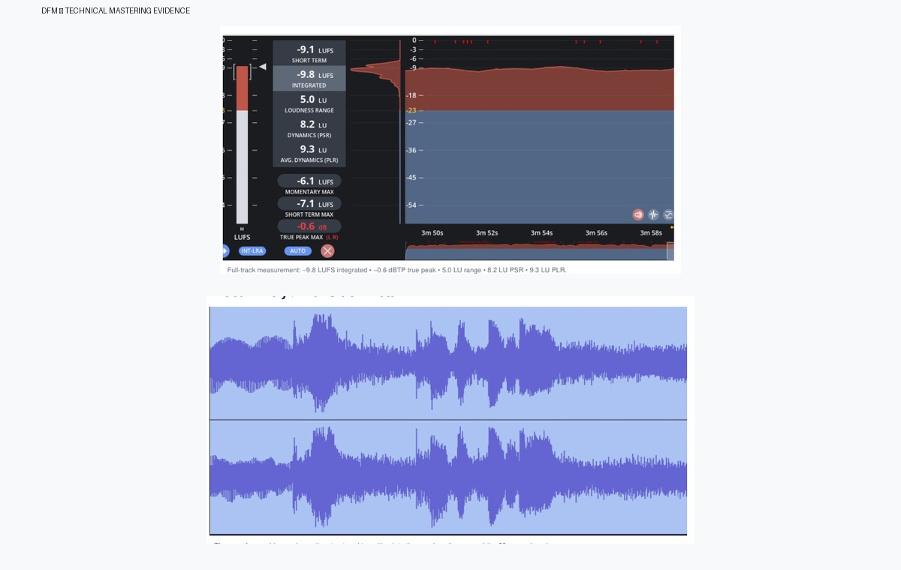
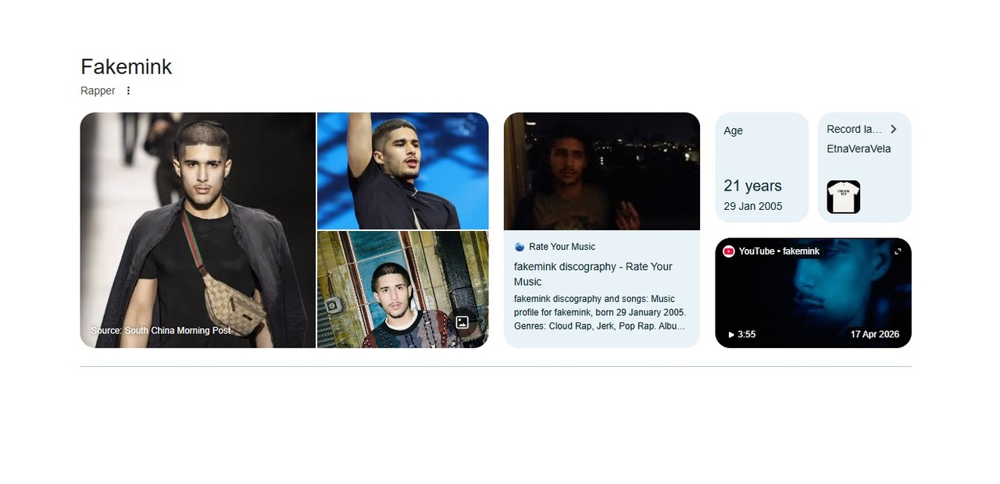
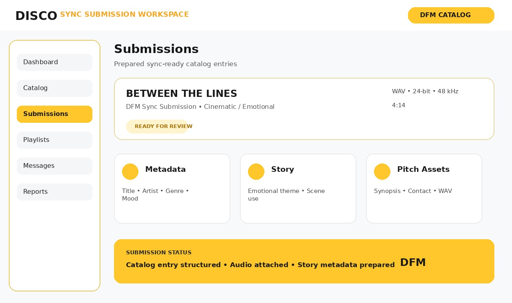

01
Broadcast-Ready Sound
Mastering designed around clarity, loudness control, tonal balance and delivery formats suitable for streaming and professional media use.
Master My TrackWe help independent artists turn great music into durable infrastructure—broadcast-ready mastering, search authority, open music-entity indexing and sync-ready presentation.
DFM focuses on the pieces that keep working after a campaign ends: sound quality, metadata, discoverability and professional pathways to music supervisors.

Mastering designed around clarity, loudness control, tonal balance and delivery formats suitable for streaming and professional media use.
Master My Track
Artist metadata and open-database structures prepared to support stronger, organic digital discoverability.
Build My Footprint
Catalog and story metadata prepared for supervisors, film, TV and commercial opportunities.
Get Sync ReadySend your track or artist link and start a direct conversation about mastering, search footprint or sync preparation.
Talk to Taoheed →